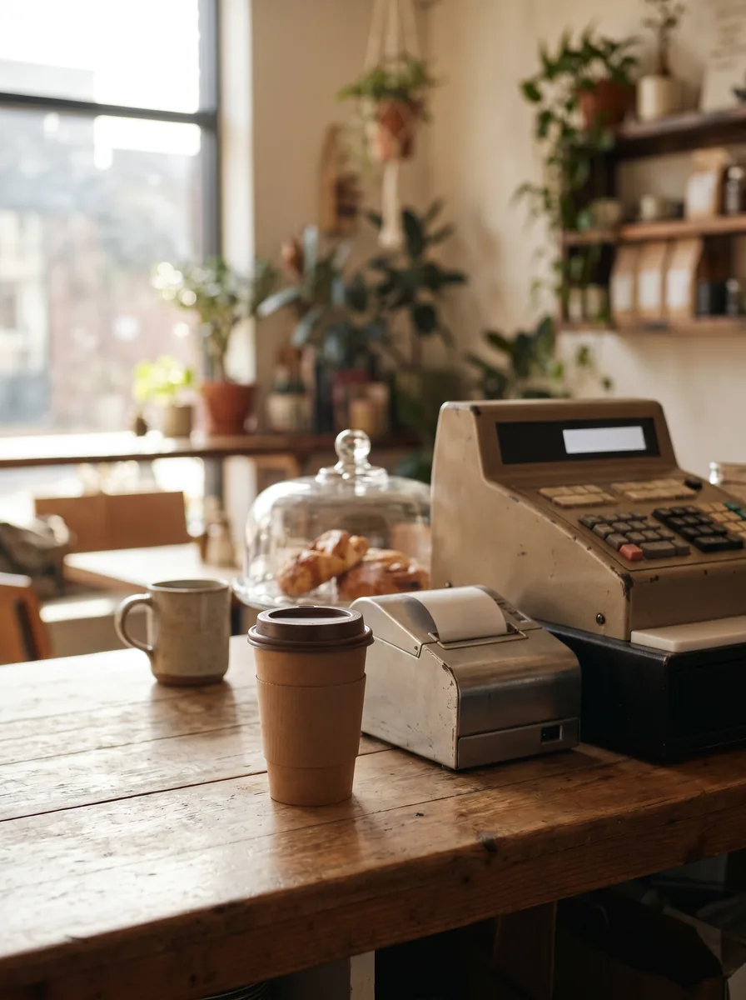

AI visual mockup — direction only, not final asset.
Your Usual Should Count
Show a regular coffee run and make Perks feel like a natural add-on, not a rewards-program ad.
Visual direction / mockup
Close-up cup handoff, receipt/register moment, warm counter texture.
On-asset copy
“Your usual should count.” / “Already making the stop? Start earning from it.”
Caption sample
If City Brew is already part of your routine, make that routine count with Perks.
Assets needed
- Cup handoff b-roll
- Register/receipt shot
- Approved Perks language
- Fallback: cup photo + text overlay
Room notes: Moxie killed “Join Perks today” as too generic. Riff reframed it around an existing habit.